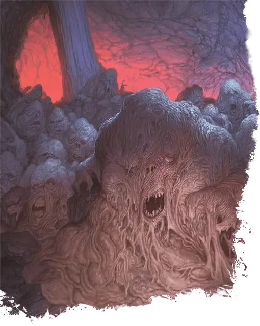

Рой лемуров
Swarm of Lemures
Большой рой средних Исчадий (Дьявол), Принципиальное Злое

Класс Защиты 12 Инициатива −2 (8)
Хиты 45 (6к10 + 12)
Скорость 40 футов
| мод | спас | ||
|---|---|---|---|
| СИЛ | 14 | +2 | +2 |
| ЛОВ | 7 | −2 | −2 |
| ТЕЛ | 14 | +2 | +2 |
| мод | спас | ||
|---|---|---|---|
| ИНТ | 1 | −5 | −5 |
| МДР | 12 | +1 | +1 |
| ХАР | 3 | −4 | −4 |
Сопротивление урону Дробящий, Колющий, Рубящий, Холод
Иммунитеты Огонь, Яд; Испуганный, Окаменевший, Опрокинутый, Опутанный, Отравленный, Очарованный, Ошеломлённый, Парализованный, Схваченный
Чувства Тёмное зрение 120 футов (магическая Тьма не препятствует зрению), пассивное Восприятие 11
Языки понимает Инфернальный, но не говорит
Опасность 3 (700 опыта; БВ +2)
Особенности
Адское возрождение. Когда рой умирает в пределах Девяти Преисподних, он возрождается со всеми Хитами спустя 1к10 дней, если только не был убит существом под эффектом заклинания Благословение или его останки не были облиты Святой водой.
Рой. Рой может занимать пространство другого существа и наоборот, а также может проходить через отверстия, которые достаточно велики для существа Среднего размера. Рой не может восстанавливать Хиты или получать Временные хиты.
Действия
Мультиатака. Рой совершает две атаки Мерзкой слизью.
Мерзкая слизь. Бросок рукопашной атаки: +4, досягаемость 5 фт. Попадание: 11 (2к8 + 2) урона Ядом, или 9 (2к6 + 2) урона Ядом, если рой Окровавлен.
Бонус мастерства +2
Среда обитания Девять преисподних
Сокровища Отсутствуют
Лемуры
Дьяволы агонии и отчаяния
Лемуры — самые слабые из всех дьяволов, которые появляются из злых душ, начисто лишённых воспоминаний о прошлой жизни. Из этих сгустков адской протоматерии проступают лишь неясные формы конечностей и черты измученных лиц.
Когда дьяволы сгоняют множество лемуров в одно место или те сливаются в единую массу, возникает стая с общим сознанием.